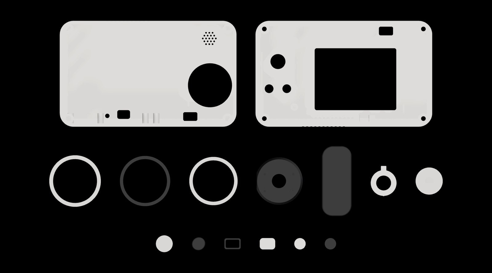

출력하기 전에 확인하는 것들.
본체 한 판을 뽑는 데 8–11시간이 걸려서, 틀린 걸 출력한 뒤에 알면 하루가 그냥 지나갑니다. 그래서 확인할 수 있는 건 되도록 스크립트로 확인하게 만들었습니다.
모르는 치수
부품마다 판매처 표기가 다르고, 기계 도면이 아예 없는 부품도 많았습니다. 공식 도면에서 가져온 값과 제가 가정한 값을 표로 나눠 두고, 직접 재야 하는 값은 설정 파일에 따로 표시했습니다. 부품이 도착하면 재서 값만 고치고 빌드 스크립트를 다시 돌리면 됩니다.
부품끼리 부딪히는지
부품 외형과 출력물을 겹쳐 보는 검사 스크립트를 만들었고, 카메라의 화각 원뿔이 경통이나 덮개에 걸리는지도 같이 봅니다. 지금은 겹치는 곳이 없고, 가장 좁은 틈은 렌즈 슬리브와 배터리 사이 0.3 mm, 배터리와 랜 포트 사이 0.4 mm입니다.
시험판
나사 인서트 구멍(3.8–4.2 mm), LCD 자리, 버튼 눌림을 확인하는 작은 시험판 세 개를 먼저 뽑습니다. 하나에 10–20분이면 되고, 맞는 값을 찾은 뒤에 본체를 출력합니다.
출력.
부품은 열다섯 가지입니다. 앞뒤 쉘을 한 판(약 8–11시간), 렌즈 링과 버튼 같은 작은 부품과 시험판을 또 한 판(약 4–6시간)에 놓고, 흰색 플래시 창만 따로 뽑습니다(약 10분).
어두운 회색 PLA로 뽑은 뒤, 바디와 링은 서페이서와 400방 사포를 거쳐 메탈릭 실버로 칠할 계획입니다. 렌즈 슬리브 안쪽은 빛이 번지지 않게 무광 검정으로 칠합니다.

제원.
- 크기
- 130 × 78 × 36 mm, 렌즈까지 약 48 mm
- 보드
- 라즈베리 파이 3 B+
- 카메라
- IMX219, 800만 화소, 대각 화각 79.3°, F2.0
- 화면
- 2.8인치 LCD
- 조작
- 2단 셔터와 줌 링, 전원 버튼, 4단 모드 다이얼, 조이스틱, 버튼 두 개
- 전원
- 리튬 배터리, USB-C 충전
- 그 밖에
- 스피커, 시계(RTC), 뷰파인더, 플래시 창
- 설계
- CadQuery
- 출력
- 부품 열다섯 가지, 어두운 회색 PLA
다음.
시험판으로 치수를 맞추고 본체를 출력해 조립합니다. 그다음은 촬영 소프트웨어와 필름 느낌의 색 보정입니다.
만드는 과정은 블로그에 적고 있습니다.